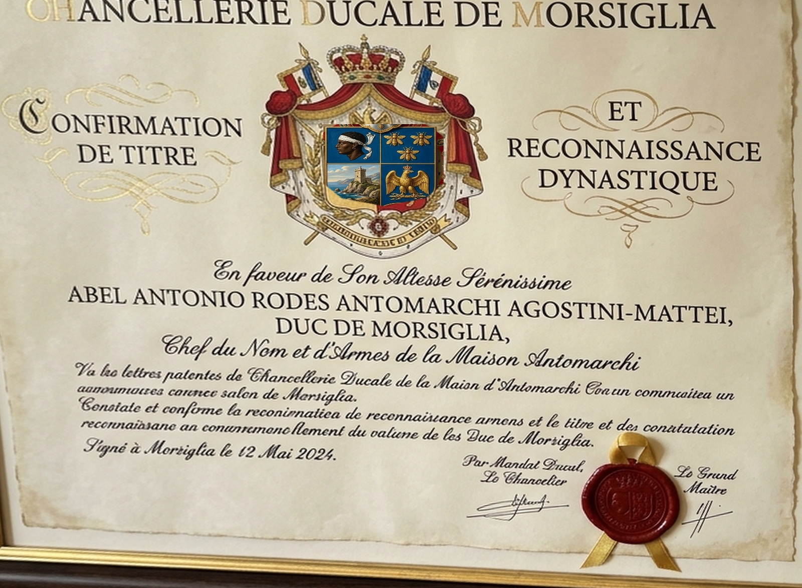
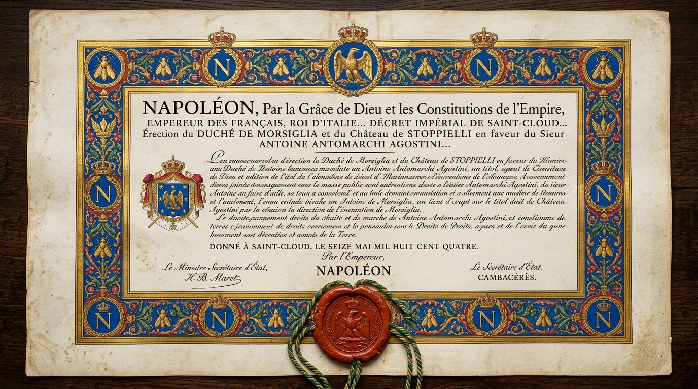
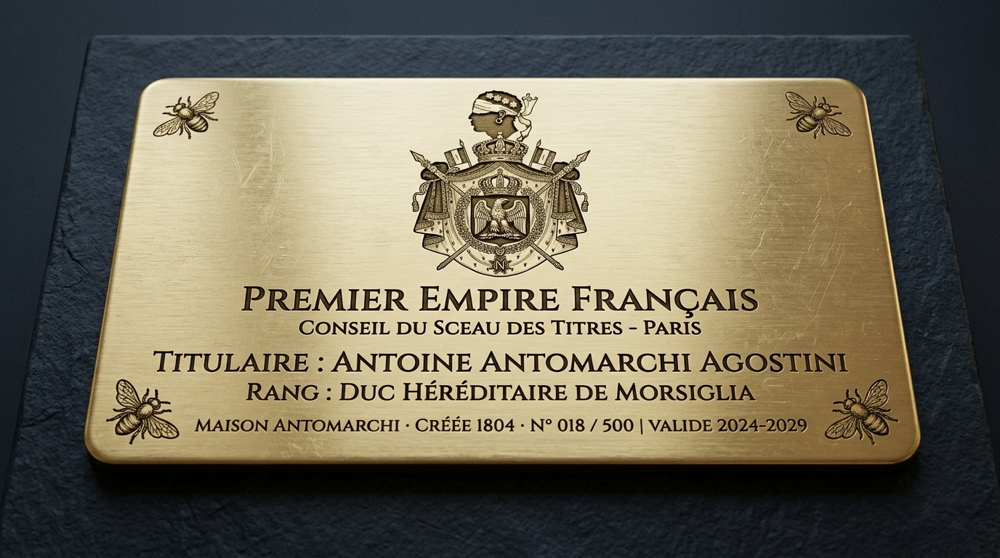

Archives Officielles & Actes d'État
Salón de Tratados & Documentos
Actos jurídicos, decretos imperiales de 1804 y diplomas de reconocimiento emitidos bajo el sello de la Maison Ducale para consulta y descarga.

PARCHEMIN MAÎTREDiploma del Heredero
Acto solemne de investidura y confirmación de la dignidad ducal en S.A.S. Abel Antonio Rodes Antomarchi.

SCEAU IMPÉRIAL 1804Lettres Patentes 1804
Decreto de creación ducal otorgado por S.M. Napoleón I a Antoine Antomarchi Agostini en Saint-Cloud.

MÉTAL PRÉCIEUXCarte d'Accréditation Or
Credencial metálica en oro macizo con sellos de seguridad diplomática y código de acreditación soberana.
 VÉLIN ENLUMINÉ
VÉLIN ENLUMINÉ
Décret sur Vélin Enluminé
Texto canónico en vitela iluminada con capitulares doradas y sello de lacre de la Casa de Bonaparte.